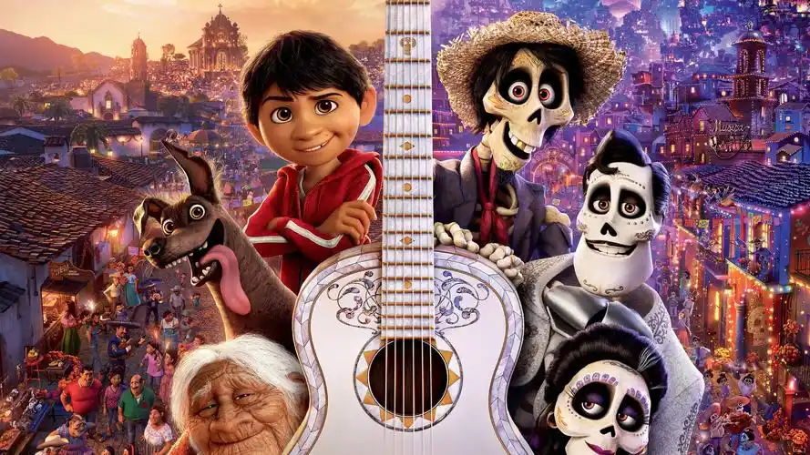

| 创作背景 | ||
寻梦环游记：死亡并不是终点，而是生命旅程中的一个转折点 该故事背景设定在墨西哥，尤其是以“亡灵节”为特色的墨西哥传统文化。亡灵节是墨西哥的一个重要节日，时间在每年的11月1日和2日，用于纪念逝去的亲人和祖先。 在这个节日里，人们会准备美食、摆放彩色图案和鲜花，搭建亡灵壁龛来迎接死者的灵魂回家。亡灵节是墨西哥文化中一个充满神秘和美丽的传统，也体现了墨西哥人民对于家庭和亲情的重视。 |
||
|  | ||
| 剧情简介 | ||
| 一个鞋匠家庭出身的12岁墨西哥小男孩米格，自幼有一个音乐梦，但音乐却是被家庭所禁止的，他们认为自己被音乐诅咒了。在米格秘密追寻音乐梦时，因为触碰了一把吉他而踏上了亡灵土地。每年的亡灵节日，逝去的家人都会返回人间与亲人团聚，但从来还没有人去到过亡灵的世界。米格被多彩绚丽的亡灵世界所震撼，而更令他的惊喜的是，他重逢了失去的太爷爷和祖辈们，一家人要想办法将米格重新送回人间。 | ||
| 制作人员 | ||
职员表 制作人 达拉·K·安德森、约翰·拉塞特 导演 李·昂克里奇、阿德里安.莫利纳 编剧 李·昂克里奇、阿德里安.莫利纳、马修·奥德里奇 配乐 迈克·吉亚奇诺 剪辑 Steve Bloom、李·昂克里奇 选角导演 Natalie Lyon、Kevin Reher 艺术指导 Harley Jessup 录音 Greg Crawford、Howard London、Dave Wilson、Blake Collins
|
||